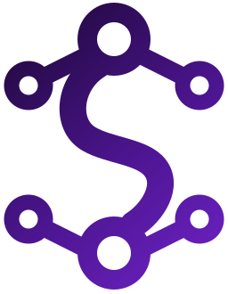

民宿的阿慧每個月要對三個訂房平台的帳：三份格式完全不一樣的報表，加上自己記的私訂，要一筆一筆對到戶頭的入帳。上一課 Claude Code 幫我們整理了一次檔案，這一課請它做一支每個月都能再跑的對帳工具。做工具的過程中，它會回你一大串看不懂的話、會跳紅字、會改過頭。這一課教你聽懂它，也教你指揮它。跟上一課一樣，今天要用付費版。不會的，就問 Claude。
看不到影片？到 YouTube 觀看。每一段的一分鐘短片在 AI 實戰短片播放清單。
民宿「山嵐小屋」十月和十一月的對帳資料。民宿、平台、客人、帳號全部是虛構的。每個月有五個檔案：三個訂房平台的報表（一份 CSV、一份 Excel、一份 PDF）、一份自己記的私訂紀錄、一份戶頭的入帳明細。十月的資料裡故意放了幾筆對不起來的。
先只留 2026-10 在「對帳」資料夾裡，2026-11 等 D 段再放進去。
</>），就是 Code 分頁。它的回報裡常常有用斜線隔開的字，例如 對帳/2026-10/請你確認.txt。這叫路徑，就是檔案的地址，從最外面的資料夾一層一層寫到檔名：
| 副檔名 | 它是什麼 | 這一課在哪裡出現 |
|---|---|---|
.csv | 純文字的表格，什麼軟體都打得開 | 平台的訂單明細、戶頭的入帳明細 |
.xlsx | Excel 的試算表 | 平台的報表、它做出來的對帳總表 |
.pdf | 排版固定的文件 | 平台的月對帳單 |
.json | 給程式讀的設定 | 各平台抽成的比例 |
.py | 它寫的程式 | 對帳工具的本體 |
.txt | 純文字的筆記 | 請你確認的清單 |
.md | 帶簡單格式的說明文件 | 它寫的計畫；下一課的 CLAUDE.md |
它會一個檔案一個檔案講給你聽。這一句任何時候都可以用。
工具做好之後，阿慧想自己跑一次，這要用到終端機。
打開之後，先進到工具所在的資料夾：輸入 cd 加一個空格，把「對帳」資料夾用滑鼠拖進終端機的視窗（路徑會自己出現），按 Enter。游標前面的字變成資料夾的名字，就進來了。
阿慧照自己知道的方式打了一句指令去跑工具，結果跳出一片紅色的英文：
先別關視窗。電腦沒有壞，也不是你弄壞的。紅字是電腦在說自己卡在哪裡，最有用的通常是最後一句。看不懂沒關係，照下面做：
影片裡它的回答是：這支工具要用到一個叫 openpyxl 的套件，這台電腦找不到，所以程式一開頭就停了；資料沒有壞，檔案也沒有被改到。它還告訴你正確的跑法是哪一句。
紅字最後一句裡的 openpyxl 就是一個套件。套件是別人寫好的現成零件，程式借來用，不用自己從頭做。這支對帳工具借了兩個：openpyxl 寫 Excel，pdfplumber 讀 PDF。Claude 要安裝套件之前會先問你，不確定就問它：
它在做事的時候，輸入框右邊會出現一顆黑色的方塊。按下去它就停，已經做好的不會不見。也可以按鍵盤的 Esc。
所以重要的進度要另外記下來。做這件事的工具叫 Git，是寫程式的人都在用的版本控制工具：它把整個資料夾在某一刻的樣子完整記下來，之後可以看每一次改了什麼，也可以回到任何一次。打電動的存檔點是最接近的比喻。
| 名詞 | 意思 |
|---|---|
| 版本控制 | 把資料夾每一次的樣子記下來，可以比較、可以回去 |
| 提交（commit） | 一次紀錄，會附一句說明，寫這一次做了什麼 |
| 儲存庫（repository，常簡寫成 repo） | 被 Git 管理的資料夾。紀錄放在資料夾裡一個隱藏的 .git 資料夾，存在你自己的電腦，不會自己跑到網路上 |
| GitHub | 另一個東西：把儲存庫放到雲端的網站，用來備份、跟別人合作。後面的課會用到 |
這些名詞認得就好，指令不用記，用講的就可以：
它說「存好了」的時候，實際上是做了一次提交。存好之後，App 右邊會多出「變更」的面板，之後改了什麼都看得到。客人姓名、戶頭明細這類資料，它會提醒你先不要放進去。
第一次用到 Git 的時候，macOS 可能跳出視窗，問要不要安裝「命令列開發者工具」。按 安裝，等它裝完，再請 Claude 存一次檔。
到 git-scm.com/downloads/win 下載 Git for Windows，一路按下一步裝完，把 Claude 關掉再打開，再請它存一次檔。安裝卡住了，就截圖問聊天版的 Claude。
Claude 不是付了錢就能無限用。免費版和 Pro 方案能用的量都有上限：每 5 小時算一次，每週再算一次。用到上限，它會請你等，時間到了才能繼續。像這一課這樣做一支工具，要讀很多檔案、跑很多步，用得特別快，所以要知道是什麼在吃用量。各方案的上限以 claude.com/pricing 為準。
用了多少自己看得到：點視窗左下角自己的名字，選 使用量，上面會寫這個星期已經用掉多少、哪一天歸零。
這是官方 方案與價格 頁面上的說法。
在輸入框打一個 /，指令的選單就會跳出來，不用背。下面是這一課用到的：
| 你想做的事 | 電腦版 Code 分頁 | 終端機 |
|---|---|---|
| 看有哪些指令 | 打 /，或 /help | /help |
| 看這段對話用了多少 | /context；右邊「背景資訊」也看得到 | /context |
| 把前面的對話濃縮成摘要 | /compact | /compact |
| 換一件事，開新的對話 | 視窗左上角的 新增（看不到的話，先點左上角的側邊欄圖示把側邊欄打開） | /clear |
| 回到之前的對話 | 視窗左邊的側邊欄，在資料夾名稱底下點那一段；或 /resume | /resume |
| 換模型 | 輸入框下面那一排，寫著模型名稱的地方（例如 Sonnet 5.5），點它；或 /model | /model |
| 先看計畫再動手 | 權限選單選 規劃；或 /plan | 按 Shift + Tab 切換 |
| 喊停 | 黑色方塊，或 Esc | Esc |
| 倒回 | 訊息下面的 倒回至此處 | /rewind，或輸入框沒有字的時候連按兩次 Esc |
| 指定某一個檔案 | 打 @ 加檔名 | 打 @ 加檔名 |
模型就是 Claude 的頭腦。Claude 其實不只一個頭腦，它是一家人，裡面有幾個大小不同的頭腦，每一個叫一個「模型」。你送出的每一句話，是其中一個在回答你：大的想得深，小的動作快，吃的用量也不一樣。現在用的是哪一個，看輸入框下面那一排，寫著模型名稱的地方（例如 Sonnet 5.5），點它就可以換。
| 模型 | 適合做什麼 |
|---|---|
| Haiku 5.5 | 最快，回答簡單的問題 |
| Sonnet 5.5 | 簡單的工作最划算。影片裡的對帳工具是用它做的 |
| Opus 5.5 | 複雜的工作，日常的事也可以 |
| Fable 5.2 | 留給最難的題目。Pro 方案用它要另外加購額度 |
把 2026-11 資料夾放進「對帳」，回到同一段對話，只說一句：
下一課：Day 6，讓它照你的規矩做。
資料更新日期：2026 年 11 月 16 日。App 的畫面是當天用付費帳號、繁體中文介面實際操作的樣子。AI 工具更新很快，功能和價格請以官方網站為準。